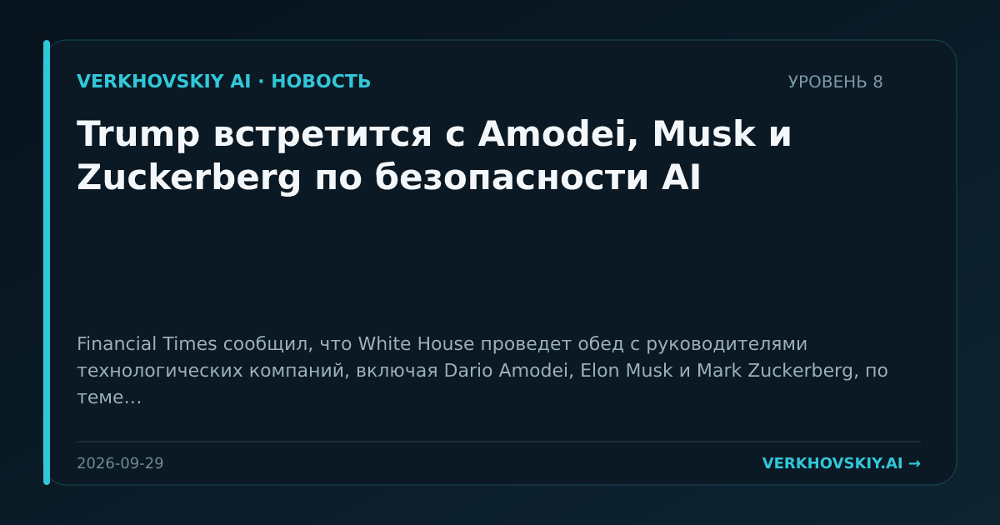

Trump встретится с Amodei, Musk и Zuckerberg по безопасности AI
Financial Times сообщил, что White House проведет обед с руководителями технологических компаний, включая Dario Amodei, Elon Musk и Mark Zuckerberg, по теме безопасности AI; президент сопротивляется призывам к регулированию. Почему это важно: Контур принятия решений по AI-рискам концентрируется в прямых переговорах между государством и владельцами ключевых платформ.